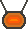
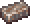

Absorber (русский: Поглотитель) - это аксессуар из раннего этапа игры, дающий игроку 10% сопротивления к урону. Это хороший аксессуар для начала игры, так как имеет простой крафт, и дает хорошую защиту.
Создание
 Железный Слиток x 10  Наковальня
Наковальня
Наковальня